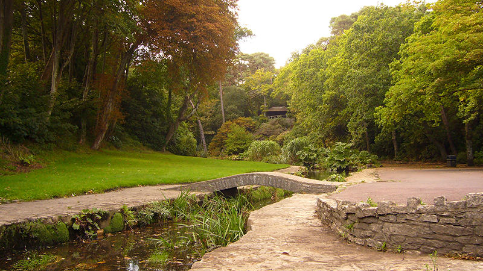

I walk the asphalt paths of Branksome Chine,
In resin-scented air like strong Greek wine.
Branksome Park takes its name from a poem by Walter Scott, “The Lay of the Last Minstrel”. Published in 1805, it was enormously popular; appealing to the romantic, gothic taste which was then so fashionable. The setting was Branxholme Castle in the Scottish Borders. The text sounds heavy to modern ears:
The way was long, the wind was cold
The Minstrel was infirm and old;
His wither’d cheek, and tresses gray
Had clearly seen a better day.
Those of us no longer in the first flush of youth may sympathise, or even identify, with the Minstrel as we puff up Canford Cliff at this time of year - but not enough, in my case, to plough through the remaining 6 cantos.
More ancient history is limited. The area was wild heathland disliked and avoided by honest travellers and commented on disparagingly by writers who deigned to mention it. Smugglers tales abound and there is hard evidence of large scale, organized smuggling. Branksome beach was the favourite landing place for the smuggler known as Gulliver, who is said to have employed 50 men in his personal livery. His pack-horses climbed through the Chine and then on to Bristol or London. The government turned a blind eye in return for intelligence on French naval and military movements during the French wars.
Five and twenty ponies trotting through the dark,
Brandy for the Parson, ‘baccy for the Clerk;
Laces for a lady, letters for a spy:
Watch the wall my darling as the Gentlemen go by.
There are also less well documented tales of a secret passage under the Chine, which was said to have collapsed, burying smugglers and treasure deep underground. Are they true? Well:
Them that’s asks no questions isn’t told no lies.
Watch the wall my darling as the Gentlemen go by.
What became Branksome Park was bought by the Bruce family, who planted the pine plantations for which the whole area became famous; partly for their health giving properties, for which there seems to be some modern support. The next owner, Charles Packe, employed a leading Scottish architect to construct a baronial mansion by the sea known as Branksome Towers, and improved the plantations with Scots pine, a better timber than the poorer quality Maritime Pine. The 750 acre estate was walled and a set of gates built at the entrance to the drive, now The Avenue.

He enjoyed his privacy for only 16 years. On his death in 1867 the estate was bought by Henry Bury who began its development. He built All Saints Church, laid out the estate - and provided that each house should sit in a plot of at least one acre. He kept Branksome Chine an open space.
The development has continued since then. Many houses have been replaced with blocks of flats of varying degrees of architectural merit.
The fact that the area has generally retained its attractive look and feel as well much of the mature woodland is in large part due to the early work carried on by H.S. Gibbs and subsequently The Branksome Park, Canford Cliffs and District Residents’ Association which he founded and to whom we all owe an enormous debt of gratitude.
Thanks to their work with the Local Council the awful vision of Betjeman’s Town Clerk, quoted above, has not yet come to pass:
And [I] dream of cliffs of flats along those heights,
Floodlit at night with green electric lights.
The Chine has remained a much-valued open space, but its appearance has changed over the years. Old photographs and maps refer to it as Branksome Lakes: the stream pooled out into a series of shallow lakes and small waterfalls running picturesquely down to the beach.
In 1930 Branksome Chine Gardens were remodelled and restored by Poole Council, to whom ownership had passed in 1895. A collection of “tumbledown little shacks” and beach huts were removed. New beach huts were constructed, the Solarium built, and the money raised was used to construct the promenade. The stream was channelled using Portland Stone, the work designed to help relieve unemployment during the depression.
A small model boating lake was retained at the entrance to the main road, by the sea. The contours along one side were designed to represent the coastline of Southern England - and the small island, which could be jumped onto by an adventurous child - the Isle of Wight. Sadly, this has now disappeared. Postcards show colourful flowerbeds and some ornamental structures, including a thatched cottage, the Cabin, selling teas.
The Minister who opened the gardens - Miss Margaret Bonfield, the first ever female Cabinet Minister - famously described Poole Council as ‘The Gardeners of England”.
Since then the Chine has gradually reverted to broad leaved natural woodland, with some fine mature pines, and here and there a colourful reminder of its former glory. The undergrowth is largely brambles and rhododendron scrub - a shrub which drives out native plants and the animals which rely on them to survive. Woodland butterflies are also driven out. Its toxicity means that few if any animal species are associated with it.
We are working with the officers of BCP Council to agree the initial programme of works and their help and advice is gratefully acknowledged.
We are especially grateful to Councillor May Haines, whose early support and continuing encouragement has been invaluable.
© 2022